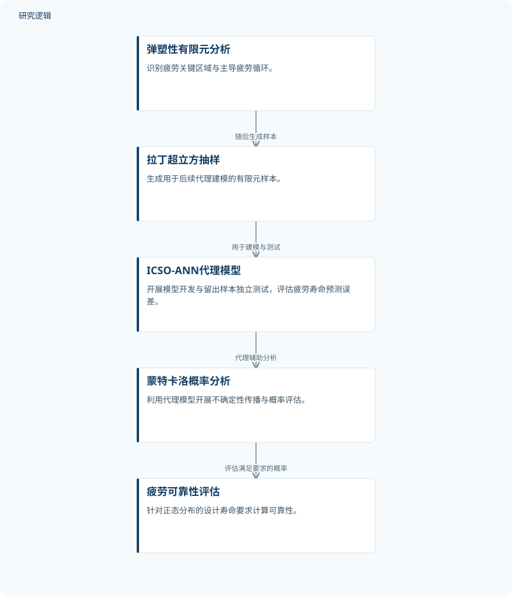

摘要解读
子结构信息驱动的一体化叶盘—轴转子低周疲劳可靠性代理评估框架
A Substructure-Informed Surrogate Framework for Uncertainty-Based Low-Cycle Fatigue Reliability Assessment of Integrated Blisk-Shaft Rotors.
解读更新 2026-10-31 10:06 · 依据公开摘要整理，未核验全文细节
整体叶盘—轴转子在复杂工况与参数不确定性下易发生低周疲劳，但直接依靠有限元开展概率评估计算代价较高。这项研究将疲劳关键区域识别、神经网络代理模型与蒙特卡洛模拟结合，关注如何兼顾寿命预测精度与可靠性评估效率。
文章目录
低周疲劳评估为何需要代理模型
对于整体叶盘—轴转子，研究问题不仅是预测疲劳寿命，还包括分析参数不确定性如何影响寿命及其满足设计要求的概率。摘要指出，直接基于有限元开展这类概率评估计算负担较重，因此作者引入代理模型，承担后续不确定性传播中的寿命预测任务。
从主导循环识别到概率寿命评估
研究首先开展弹塑性有限元分析，识别疲劳关键区域与主导疲劳循环；随后通过拉丁超立方抽样生成1000个有限元样本。作者开展四次独立评估，每次使用200个样本开发模型，另留出50个样本用于独立测试。这些样本属于有限元计算样本，不应理解为实体转子的试验数量。
代理模型采用改进猫群优化辅助的人工神经网络，简称ICSO-ANN，并与蒙特卡洛模拟结合开展疲劳可靠性分析。摘要明确了这些方法环节，但未展开猫群优化的改进机制、网络结构，以及主导循环如何具体参与寿命计算。
依据摘要整理的疲劳可靠性评估流程


概括摘要明确陈述的有限元分析、样本生成、代理建模与概率评估关系，并非论文原图。
下载 SVG图示关系说明
实线表示相邻阶段的信息流，虚线表示跨阶段联系或反馈。
弹塑性有限元分析 → 拉丁超立方抽样：随后生成样本；拉丁超立方抽样 → ICSO-ANN代理模型：模型开发与测试；ICSO-ANN代理模型 → 蒙特卡洛可靠性分析：提供代理寿命预测
预测误差、可靠性与计算加速分别说明什么
摘要报告，ICSO-ANN的平均绝对百分比误差（MAPE）为0.77%。在设计寿命要求服从正态分布、均值为11,000个循环的设定下，概率分析得到约98.6%的可靠性。前者描述寿命预测误差，后者对应特定设计寿命要求下的概率结果，两者不能相互替代。
在相同的103个样本基准下，代理辅助分析相对直接基于有限元的蒙特卡洛分析实现约69倍计算加速。敏感性分析还指出，疲劳强度参数与转速是疲劳寿命不确定性的主要贡献因素，为理解该评估中哪些输入更值得关注提供了线索。
摘要尚不足以界定工程适用范围
仅凭摘要，无法判断输入参数的取值范围、分布与相关性，也无法确定留出测试覆盖了哪些工况，以及是否包含实体疲劳试验或跨结构验证。摘要虽给出样本划分，但未说明各次评估的误差波动、与其他代理模型的比较，以及加速比是否计入样本生成和训练成本；这些属于当前资料未交代的信息，并不意味着论文没有开展相关工作。
阅读启发：把代理精度与可靠性可信度分开看
阅读启发：进一步阅读时，可重点关注主导循环的选取依据、代理误差如何影响可靠性估计，以及疲劳强度参数和转速的敏感性结论适用于哪些输入范围。对于智能运维方向，这项研究提供的是计算评估思路；当前摘要不足以证明其已经具备在线监测或剩余寿命预测能力。
以上为本站阅读启发与建议，不是论文已验证的结论。